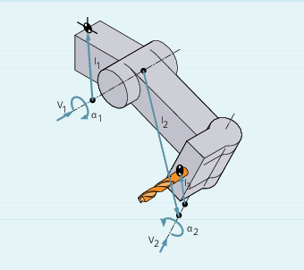

Voraussetzungen
Ein Werkzeugträger kann ein Werkzeug nur dann in alle möglichen Raumrichtungen orientieren, wenn
-
zwei Drehachsen
V1 undV2 vorhanden sind. -
die Drehachsen aufeinander senkrecht stehen.
-
die Werkzeuglängsachse senkrecht auf der zweiten Drehachse
V2 steht.
Zusätzlich gilt bei Maschinen, bei denen alle möglichen Orientierungen einstellbar sein müssen, folgende Forderung:
-
die Werkzeugorientierung muss senkrecht auf der ersten Drehachse
V1 stehen.
Funktion
Die Werkzeugträgerkinematik mit maximal zwei Drehachsen v1 oder v2 wird über die 17 Systemvariablen $TC_CARR1[m] bis $TC_CARR17[m] beschrieben. Die Beschreibung des Werkzeugträgers besteht aus:
-
dem vektoriellen Abstand von der ersten Drehachse zum Bezugspunkt des Werkzeugträgers
I1, dem vektoriellen Abstand von erster zu zweiter DrehachseI2, dem vektoriellen Abstand von zweiter Drehachse zum Bezugspunkt des WerkzeugsI3. -
den Richtungsvektoren beider Drehachsen
V1,V2. -
den Drehwinkeln α1, α2 um die beiden Achsen. Die Drehwinkel werden mit Blickrichtung in Richtung der Drehachsvektoren im Uhrzeigersinn positiv gezählt.

Für Maschinen mit aufgelöster Kinematik (sowohl Werkzeug als auch Werkstück sind drehbar) wurden die Systemvariablen um die Einträge $TC_CARR18[m] bis $TC_CARR23[m] erweitert.
Parameter
Funktion der Systemvariablen für orientierbare Werkzeugträger | |||
|---|---|---|---|
Bezeichnung | x-Komponente | y-Komponente | z-Komponente |
l1 Offsetvector | $TC_CARR1[m] | $TC_CARR2[m] | $TC_CARR3[m] |
l2 Offsetvector | $TC_CARR4[m] | $TC_CARR5[m] | $TC_CARR6[m] |
v1 Drehachse | $TC_CARR7[m] | $TC_CARR8[m] | $TC_CARR9[m] |
v2 Drehachse | $TC_CARR10[m] | $TC_CARR11[m] | $TC_CARR12[m] |
α1 Drehwinkel | $TC_CARR13[m] | ||
l3 Offsetvector | $TC_CARR15[m] | $TC_CARR16[m] | $TC_CARR17[m] |
Erweiterungen der Systemvariablen für orientierbare Werkzeugträger | |||
|---|---|---|---|
Bezeichnung | x-Komponente | y-Komponente | z-Komponente |
l4 Offsetvector | $TC_CARR18[m] | $TC_CARR19[m] | $TC_CARR20[m] |
Achsbezeichner Drehachse v1 | Achsbezeichner der Drehachsen v1und v2 (Vorbelegung ist Null) | ||
Kinematiktyp Tool | $TC_CARR23[m] | ||
Kinematiktyp-T -> | Kinematiktyp-P -> | Kinematiktyp-M | |
Nur das Werkzeug ist drehbar (Vorbelegung) | Nur das Werkstück ist drehbar | Werkstück & Werkzeug sind drehbar | |
Offset der | Winkel in Grad der Drehachsen v1und v2 bei Einnahme der Grundstellung | ||
Winkeloffset der Drehachse v1 | Offset der Hirth-Verzahnung in Grad der Drehachsen v1und v2 | ||
Winkelinkrem. | Inkrement der Hirth-Verzahnung in Grad der Drehachsen v1und v2 | ||
Min.-Position Drehachse v1 | Software-Limit für Minimalposition der Drehachsen v1und v2 | ||
Max.-Position Drehachse v1 | Software-Limits für Maximalposition der Drehachsen v1und v2 | ||
Werkzeugträger Name | Anstelle einer Zahl kann ein Werkzeugträger einem Namen bekommen. $TC_CARR34[m] | ||
Anwender: Position | Beabsichtigte Verwendung innerhalb der Messzyklen vom Anwender. $TC_CARR35[m] | ||
$TC_CARR38[m] | $TC_CARR39[m] | $TC_CARR40[m] | |
Feinver- | Parameter, die zu den Werten | ||
l1 Offsetvector | $TC_CARR41[m] | $TC_CARR42[m] | $TC_CARR43[m] |
l2 Offsetvector | $TC_CARR44[m] | $TC_CARR45[m] | $TC_CARR46[m] |
l3 Offsetvector | $TC_CARR55[m] | $TC_CARR56[m] | $TC_CARR57[m] |
l4 Offsetvector | $TC_CARR58[m] | $TC_CARR59[m] | $TC_CARR60[m] |
v1 Drehachse | $TC_CARR64[m] | ||
v2 Drehachse | $TC_CARR65[m] | ||
| Hinweis |
Erklärungen zu den ParameternMit "m" wird jeweils die Nummer des zu beschreibenden Werkzeugträgers angegeben. $TC_CARR47 bis $TC_CARR54 sowie $TC_CARR61 bis $TC_CARR63 sind nicht definiert und führen beim Versuch hierauf lesend oder schreiben zuzugreifen, zu einem Alarm. Die Anfangs- bzw. Endpunkte der Abstandsvektoren auf den Achsen können frei gewählt werden. Die Drehwinke Werkzeugträger mit nur einer oder keiner Drehachse können durch Nullsetzen der Richtungsvektoren einer oder beider Drehachsen beschrieben werden. |
Erweiterungen der Parameter
Parameter der Drehachsen
Die Systemvariablen wurden um die Einträge $TC_CARR24[m] bis $TC_CARR33[m] erweitert und wie folgt beschrieben:
Den Offset der Drehachsen v1, v2 | Veränderung der Position der Drehachse v1 oder v2 bei Grundstellung des orientierbaren Werkzeugträgers. |
Den Winkeloffset/ Winkelinkrement Drehachsen v1, v2 | Offset oder Winkelinkrement der Hirth-Verzahnung der Drehachsen v1 und v2. Programmierter oder berechneter Winkel wird auf den nächstliegenden Wert gerundet, der sich bei ganzzahligem n aus phi = s + n * d ergibt. |
Minimal- und Maximalposition Drehachsen v1, v2 | Der Minimalposition/Maximalposition der Drehachse Grenzwinkel (Software-Limit) der Drehachse v1 und v2. |
Parameter für den Anwender
$TC_CARR34 bis $TC_CARR40 enthalten Parameter, die den Anwender zur freien Verfügung stehen und bis zum SW 6.4 standardmäßig innerhalb der NCK nicht weiter ausgewertet werden oder keine Bedeutung haben.
Parameter der Feinverschiebung
$TC_CARR41 bis $TC_CARR65 enthalten Feinverschiebungsparameter, die zu den Werten in den Basisparametern addiert werden können. Der einem Basisparameter zugeordnete Feinverschiebungswert ergibt sich, wenn zur Parameternummer der Wert 40 addiert wird.
Beispiel
Der im folgenden Beispiel verwendete Werkzeugträger lässt sich durch eine Drehung um die Y-Achse vollständig beschreiben.

| Programmcode | Kommentar |
|---|---|
| N10 $TC_CARR8[1]=1 | ; Definition der Y-Komponente der ersten Drehachse des Werkzeugträgers 1. |
| N20 $TC_DP1[1,1]=120 | ; Definition eines Schaftfräsers. |
| N30 $TC_DP3[1,1]=20 | ; Definition eines Schaftfräsers mit Länge 20 mm. |
| N40 $TC_DP6[1,1]=5 | ; Definition eines Schaftfräsers mit Radius 5 mm. |
| N50 ROT Y37 | ; Framedefinition mit Drehung von 37° um die Y-Achse. |
| N60 X0 Y0 Z0 F10000 | ; Ausgangsposition anfahren. |
| N70 G42 CUT2DF TCOFR TCARR=1 T1 D1 X10 | ; Radiuskorrektur, Werkzeuglängenkorrektur im gedrehten Frame einstellen, Werkzeugträger 1, Werkzeug 1 anwählen. |
| N80 X40 | ; Bearbeitung unter einer Drehung von 37° durchführen. |
| N90 Y40 | |
| N100 X0 | |
| N110 Y0 | |
| N120 M30 |